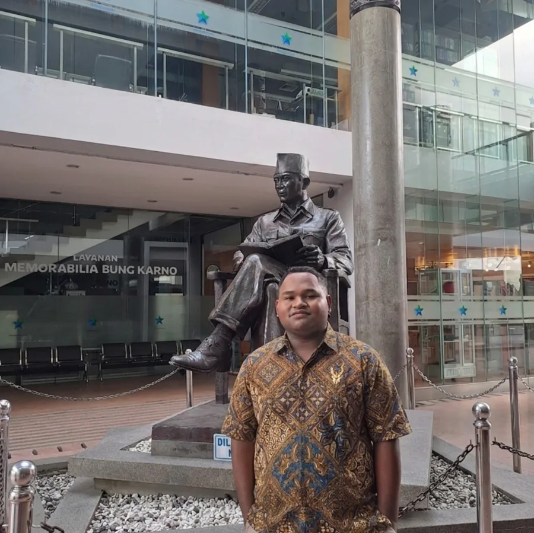

Pengembangan situs web
Situs profil, halaman landas, dan situs informatif untuk individu, komunitas, serta usaha kecil.
HTML · CSS · JavaScriptLAMBERTH PAULINUS RUMPAIDUS
Saya Lamberth Paulinus Rumpaidus, mahasiswa Teknik Informatika dengan fokus pada pengembangan web, antarmuka interaktif, dan komputasi. Saya terbuka untuk kolaborasi proyek digital.
Demonstrasi mekanisme kunci tiga dimensi melalui animasi berbasis WebGL.
Siap dibukaSaya Lamberth Paulinus Rumpaidus, mahasiswa Teknik Informatika asal Mimika, Papua Tengah. Fokus pengembangan saya mencakup aplikasi web, permainan berbasis peramban, serta perangkat komputasi melalui proyek akademik dan mandiri.
Saya mengembangkan perangkat lunak dengan memperhatikan kebutuhan pengguna, struktur kode, aksesibilitas, dan dokumentasi. Dalam merintis karier sebagai pengembang independen, saya berfokus pada solusi digital yang relevan dan mudah digunakan bagi individu, komunitas, serta usaha kecil.

Fokus saya adalah pengembangan web dan prototipe digital bagi individu, komunitas, dan usaha kecil. Setiap penawaran disesuaikan dengan kebutuhan, ruang lingkup, dan kompleksitas proyek.
Situs profil, halaman landas, dan situs informatif untuk individu, komunitas, serta usaha kecil.
HTML · CSS · JavaScriptPerancangan alur pengguna, struktur informasi, dan prototipe antarmuka untuk memvalidasi gagasan sebelum implementasi.
Figma · Responsive UIPrototipe visual, permainan berbasis peramban, dan perangkat komputasi untuk kebutuhan edukasi atau demonstrasi produk.
Canvas · Three.js · WebGLBiaya ditentukan berdasarkan kebutuhan dan estimasi pekerjaan. Tahapan, tenggat, hasil yang diserahkan, ketentuan revisi, dan dukungan lanjutan dibahas sebelum kesepakatan.
Saya menargetkan perkembangan yang berkelanjutan, baik dalam kemandirian profesional maupun kualitas karya kreatif.
Membangun sumber penghasilan mandiri melalui proyek freelance secara bertahap, sejalan dengan studi dan tanggung jawab akademik.
Memperluas jaringan profesional, mengembangkan kompetensi, dan membangun reputasi melalui komunikasi yang baik serta penyelesaian proyek yang bertanggung jawab.
Mengembangkan situs web responsif, antarmuka yang mudah digunakan, serta visual interaktif yang mendukung fungsi produk.
Memperdalam animasi, WebGL, dan komputasi untuk menghasilkan karya orisinal yang dapat diuji serta dikembangkan melalui evaluasi.
Koleksi proyek mandiri dan prototipe yang menampilkan penerapan teknologi, desain, serta pengembangan perangkat lunak.
Tidak ada proyek yang sesuai. Gunakan kata kunci atau kategori lain.
Dua karya perkuliahan dalam bidang algoritma dan pemrograman berorientasi objek.

Proyek kelompok · Ketua tim dan kontributor pengembangan
Tantangan: menyederhanakan penghitungan rata-rata dari sekumpulan nilai numerik.
C++ · Algoritma · Console applicationinternal class Mahasiswa
{
public string Nim { get; set; }
public string Nama { get; set; }
public float Ipk { get; set; }
public void Isikrs()
{
Console.WriteLine(
"{0} sedang melakukan proses Krs\n",
Nama);
}
}Tugas praktikum · Pemrograman berorientasi objek
Tantangan: merepresentasikan data dan perilaku mahasiswa dalam struktur program yang dapat digunakan kembali.
C# · OOP · .NETBidang keahlian yang saya kembangkan melalui praktik pemrograman, perancangan antarmuka, dan eksperimen komputasi.
Setiap proyek dimulai dari kebutuhan yang jelas, dilanjutkan dengan perancangan, implementasi, pengujian, dan evaluasi.
Dokumentasi dan evaluasi membantu menjaga kualitas hasil serta memudahkan pengembangan pada tahap berikutnya.
Lihat studi kasus ↗Terminal interaktif menyediakan akses ke daftar karya, keahlian, profil, dan informasi kontak. Gunakan perintah help untuk melihat seluruh pilihan.
Telusuri studi kasus lengkap, pendekatan teknis, hasil implementasi, dan bukti karya dalam satu ruang dokumentasi.
Buka halaman dokumentasiSaya terbuka untuk kolaborasi pengembangan situs web, prototipe antarmuka, dan fitur interaktif. Ruang lingkup, jadwal, biaya, serta ketentuan revisi disepakati sebelum pengerjaan.
lamberthrumpaidus@gmail.com